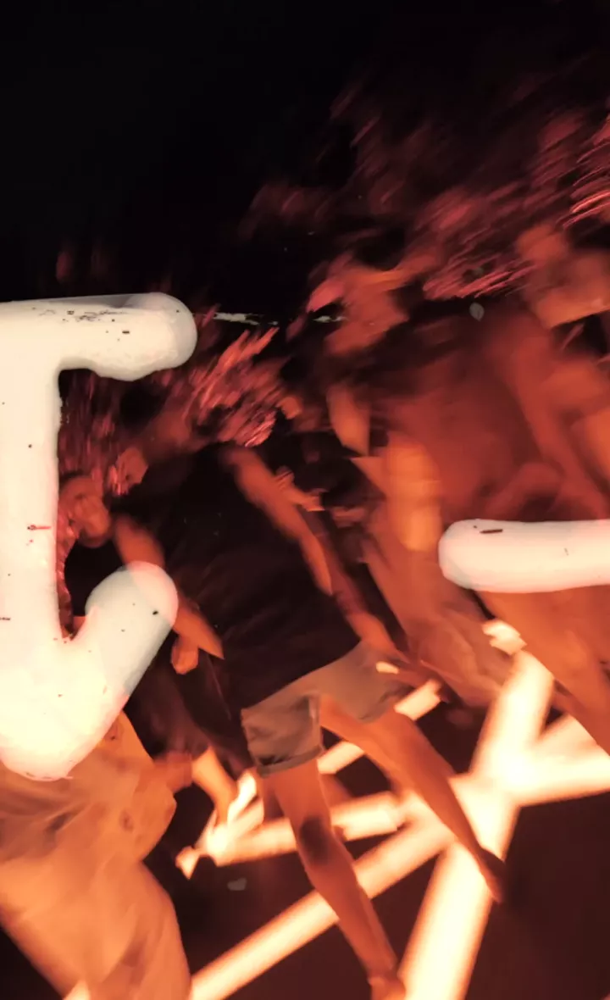

17 April 2026 · Ash, Nuanu, Bali
6 PM till late
The Godfather of American Dubstep comes to Bali. A night of deep, dark, and heavy bass music with Joe Nice (Washington DC), Roba Grow, Muvs, Roza Mozes, Vokvi, Linda and MC Nyoman.
North America's First Dubstep DJ · Gourmet Beats
Born in Southampton, UK, raised in Baltimore — Joe Nice is universally recognized as North America's first and most respected dubstep DJ. He's been playing the sound since 2001, before the genre even had a name.
In 2005 he co-founded Dub War NYC — the first dubstep night in North America, just three months after London's legendary DMZ. He was the first American-based DJ to play on Rinse FM, at DMZ, and at FWD>> at Plastic People. His label Gourmet Beats continues to push deep, dark, and heavy dubstep worldwide.
Over two decades of global touring, radio shows on Rinse FM, Sub FM, and Refuge Worldwide — Joe Nice remains committed to the deep end of the spectrum. A rare chance to experience a true pioneer in an intimate Bali setting.

Basstatic is a cultural movement centered around bass, movement, and inner state. A space where music becomes a tool for release, expression, and transformation. Through deep bass and conscious movement, the dance becomes a form of meditation, a reset, and a way to return to an authentic state.
Read More Join Community